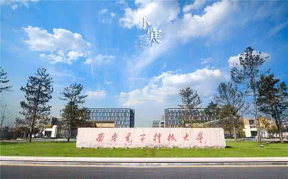

西安电子科技大学（Xidian University），简称“西电”或“西军电”，是中华人民共和国教育部直属的全国重点大学，由教育部与工信部、国防科技工业局、中国电子科技集团公司、陕西省、西安市共建 [1-4] 。是1959年首批20所全国重点大学、世界一流学科建设高校、北京高科大学联盟、新丝绸之路大学联盟成员高校之一，入选国家首批“211工程”、“985工程优势学科创新平台”、“2011计划”、“111计划”、“卓越工程师教育培养计划”，是中国电子信息领域科学研究和人才培养的核心基地，中国雷达、信息论、密码学、电子对抗、微波天线等学科的发源地。

| 计算机学院 | 900人 |
| 软件学院 | 440人 |
| 通信工程 | 1400人 |
| 微电子 | 1400人 |